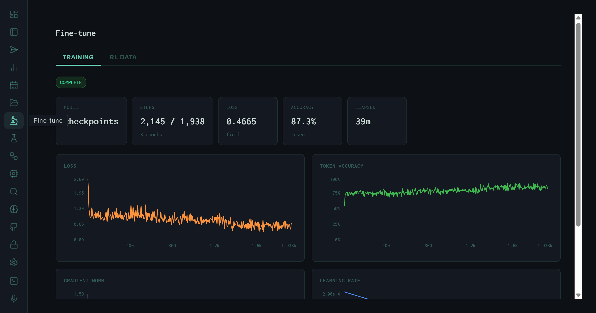
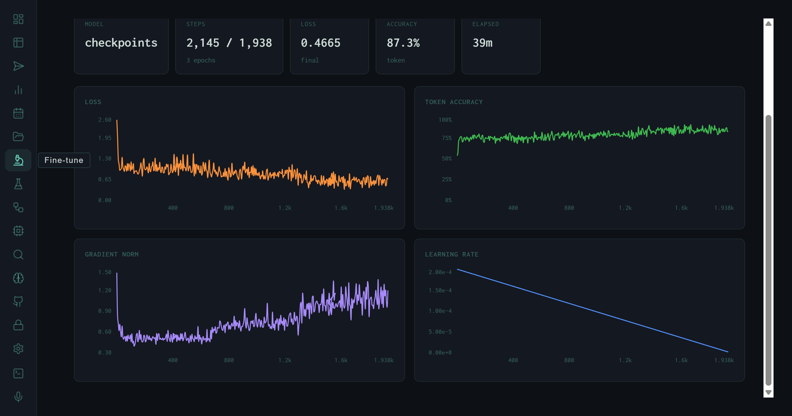
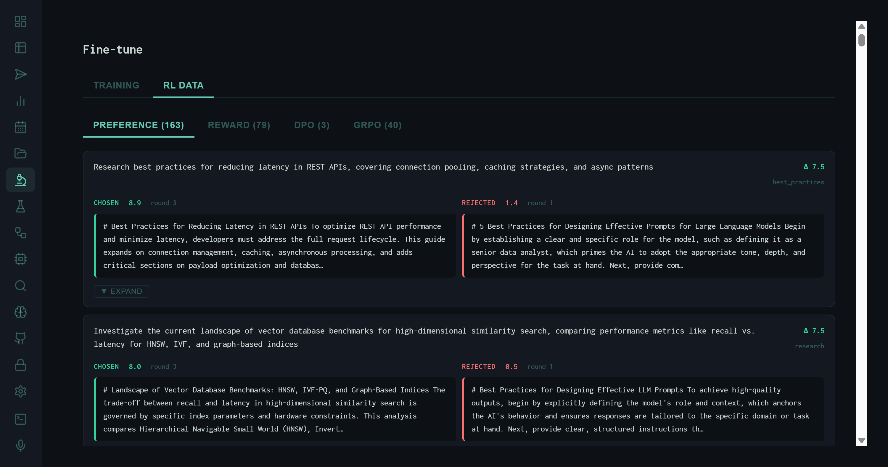

The Fine-tune View: DPO Training Runs, RL Data, and the Preference Feedback Loop
DPO training to COMPLETE: 2,145 steps, 0.4665 final loss, 87.3% token accuracy, 39 minutes. The RL DATA tab surfaces the full preference dataset — 163 pairs, 76 reward signals, 40 ORPO examples — that the training run consumed.
The Fine-tune view is the terminal stage of the harness self-improvement loop. Where the Autoresearch view surfaces prompt-level signal — which SYNTH_INSTRUCTION mutations improve scores — the Fine-tune view surfaces weight-level signal: what the model learned, how fast it converged, and what preference data drove the update. The two tabs, TRAINING and RL DATA, cover those two sides.
The TRAINING Tab

TRAINING tab immediately after a completed DPO run. Status: COMPLETE (green). Model: checkpoints. 2,145 steps across 3 epochs, final loss 0.4665, 87.3% token accuracy, total wall time 39 minutes.
Run Summary
Steps completed (2,145) exceeds the epoch-step target (1,938) by a small margin due to rounding across 3 epochs. A final loss of 0.4665 on a DPO objective is well within the convergence range for a preference-tuned model of this size — the training did not overfit, which the loss curve confirms. Token accuracy of 87.3% measures how often the model's next-token predictions matched the chosen-response tokens, a rough proxy for how well it absorbed the preference signal.
Training Charts

Four training charts: Loss (orange, descending from ~2.0 to ~0.05), Token Accuracy (green, ascending from ~50% to ~75%), Gradient Norm (purple, initially elevated then stabilizing), Learning Rate (blue, linear decay from 2e-4 to near zero).
Loss (orange)
DPO loss descends from ~2.0 to below 0.1 by step 400, then stabilizes with expected variance. The rapid early descent indicates the model quickly learned the direction of the preference signal before entering fine-grained adjustment.
Token Accuracy (green)
Climbs from ~50% at initialization to ~75% by the end of training, then plateaus with tight noise. The plateau suggests the model reached the expressible accuracy ceiling given the dataset size — more data would continue the upward trend.
Gradient Norm (purple)
Elevated early (large initial updates) then gradually decreases and stabilizes. The absence of gradient explosions confirms the learning rate schedule and gradient clipping configuration are appropriate for this model size.
Learning Rate (blue)
Linear decay from 2e-4 to near zero over 1,938 target steps. Linear decay with no warmup is appropriate for DPO on a small preference dataset — warmup would be wasted when the dataset is small and training is short.
The RL DATA Tab

RL DATA tab with PREFERENCE sub-tab active. Each entry shows a prompt, a chosen output (teal border, score 8.9), and a rejected output (red border, score 5.4). Task: "Research best practices for reducing latency in REST APIs."
Four Preference Data Sources
The RL DATA tab aggregates four distinct types of preference signal, each with its own sub-tab:
PREFERENCE (163)
Human-labeled or evaluator-generated preference pairs. Each pair has a prompt, a chosen response, and a rejected response. These are the primary DPO training signal — the model learns to make its outputs look more like the chosen side and less like the rejected side.
REWARD (76)
Single-response reward annotations, where each entry has a response and a scalar quality score rather than a paired comparison. Used for reward model training and as auxiliary signal in RLHF pipelines.
DPO (3)
Direct preference optimization pairs sourced specifically from autoresearch KEEP vs. DISCARD experiments — chosen is the KEEP instruction's output, rejected is a DISCARD output on the same task. Small count (3) reflects the low keep rate of the autoresearch loop.
ORPO (40)
Odds Ratio Preference Optimization examples. ORPO trains simultaneously on the reference model's log-odds and the preference signal, enabling preference alignment without a separate reference model inference pass — more efficient for small-dataset fine-tuning.
Pair Anatomy
Each PREFERENCE entry renders as a side-by-side comparison. The left side (teal border) is the chosen output — higher quality, higher score. The right side (red border) is the rejected output. Both are shown with their raw text, making the preference signal transparent and auditable rather than opaque label numbers.
# Best Practices for Reducing Latency in REST APIs To optimize REST API performance and minimize latency, developers must address the full request lifecycle. This guide expands on connection management, caching, asynchronous processing, and adds critical sections on payload optimization and databases.
# Best Practices for Designing Effective Prompts for Large Language Models Begin by establishing a clear and specific role for the model, such as defining it as a senior data analyst, which primes the AI to adapt the appropriate tone, depth, and perspective for the task at hand. Next, provide con…
The rejected output above illustrates the most common failure mode in the preference dataset: topic drift. The chosen response addresses the actual task (REST API latency); the rejected output is a boilerplate response about LLM prompt design that leaked from a different task template. These pairs are highly informative for DPO — the contrast is unambiguous, making the gradient signal strong.
Where the Data Comes From
The preference data accumulates from three upstream sources in the harness pipeline:
This means the fine-tune pipeline is not a separate human-labeling workflow — it's a consequence of running the harness. Every upvote in the Memory view, every autoresearch experiment, every Wiggum score contributes to the RL dataset that the next training run will consume. The loop is closed: the model's outputs generate the training signal that improves the model's outputs.
163 preference pairs is a small dataset by industrial RLHF standards, but sufficient for targeted DPO fine-tuning on a small model. The 87.3% token accuracy and convergent loss curve suggest the model absorbed the preference signal without memorizing it — the plateau at ~75% token accuracy (rather than 100%) is a healthy sign of generalization rather than overfitting.
Closing the Loop
The Fine-tune view is the last stop on the self-improvement circuit. A run produces an output; the Wiggum evaluator scores it; the Memory view accumulates it; the upvote/downvote RLHF signals label it; the autoresearch loop tries to improve the synthesis instruction; the best and worst outputs become preference pairs; and the fine-tune pipeline updates the model weights. The next run benefits from all of it.
The harness series has now covered the full stack: Runs (execution), Analytics (aggregate trends), Memory (observation store), Autoresearch (prompt optimization), and Fine-tune (weight optimization). Each view is a window into a different layer of the same feedback loop.